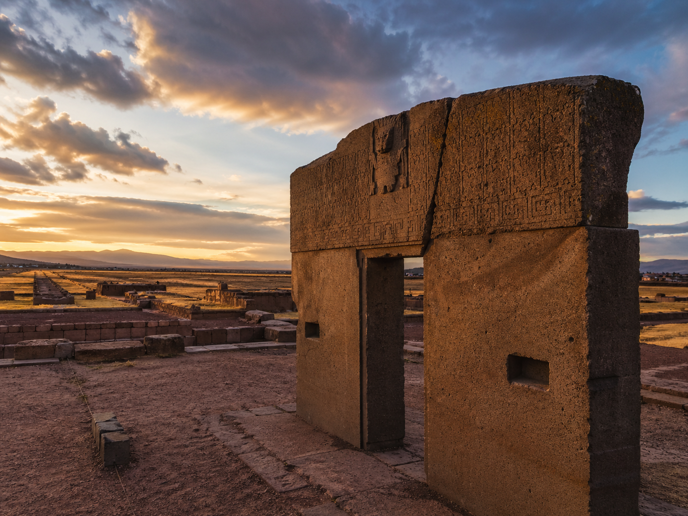
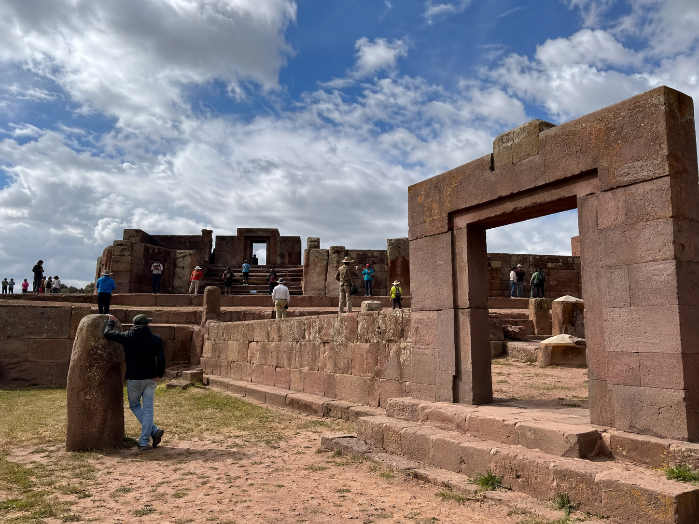
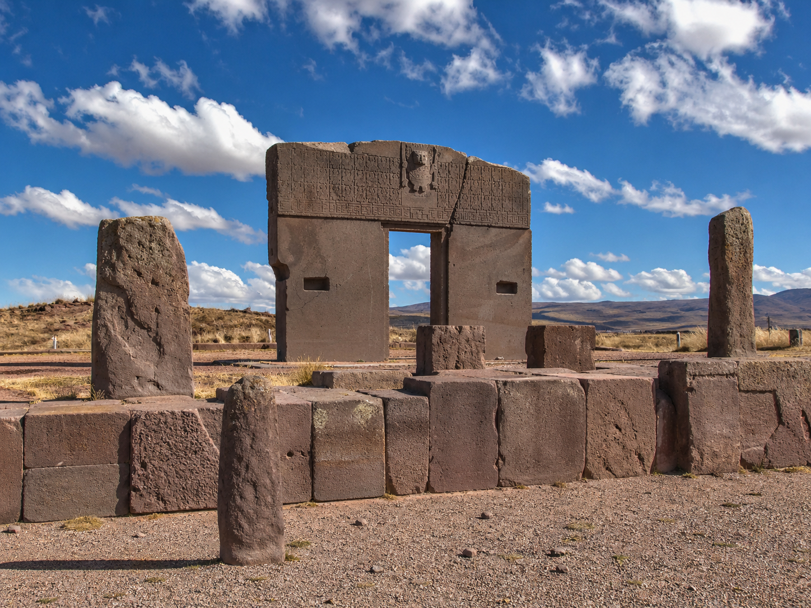

Adentrate en el corazon de la civilizacion precolombina mas influyente de los Andes centrales. Un viaje de un dia que conecta con la memoria milenaria de Bolivia.
Tiwanaku es mucho mas que un sitio arqueologico: es la puerta de entrada a la comprension de una cultura que domino los Andes centrales durante mas de 2.500 anos. Nuestro tour de dia completo te lleva desde La Paz hasta el corazon de este santuario declarado Patrimonio de la Humanidad por la UNESCO.
Acompanado por un guia especializado en arqueologia andina, recorreras el Templo Semisubterraneo, la Puerta del Sol, la Piramide de Akapana y el museo de sitio. Cada piedra cuenta una historia de ingenieria, astronomia y espiritualidad.
Recogida en tu hotel a las 08:30. Viaje de aproximadamente 1 hora y media por la carretera que atraviesa el altiplano. A la llegada, comenzamos con una introduccion al contexto historico de Tiwanaku antes de adentrarnos al sitio.
Exploramos el Templo Semisubterraneo, la Piramide de Akapana, la Puerta del Sol y la Plataforma Monumental. Cada estructura revela secretos de la astronomia, ingenieria y cosmovision andina.
Visitamos el Museo de Sitio para complementar la experiencia con piezas originales, ceramica y momias. Almuerzo tipico andino y regreso a La Paz, llegando aproximadamente a las 17:00.

El centro ceremonial mas importante de la cultura Tiwanaku, declarado Patrimonio Cultural de la Humanidad.
Acompanamiento de guias especializados que revelan el significado oculto de cada estructura y monolito.
Contempla la famosa Puerta del Sol, obra maestra de la escultura andina tallada en un solo bloque de piedra.
Almuerzo tradicional preparado con ingredientes locales para una experiencia cultural completa.

Reserva tu tour a Tiwanaku y camina por los mismos caminos que transitaron los ancestros hace miles de anos.